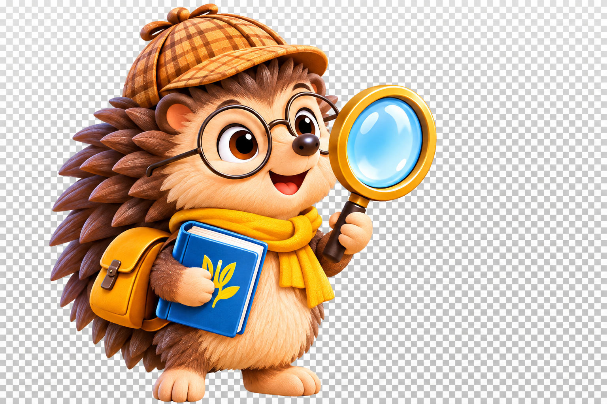

Знайдімо секрети слів!
Сьогодні я зрозумів / зрозуміла, що…
У вікні друку виберіть «Зберегти як PDF». Звіт можна зберегти на телефоні чи комп’ютері.
Ейдос · Українська мова · 3 клас
Тема: Будова слова
Мої відкриття: корінь — спільна значуща частина споріднених слів; закінчення — змінна частина слова; основа — слово без закінчення.